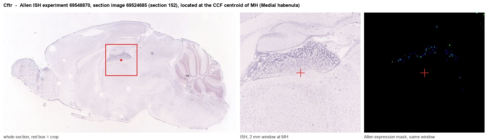
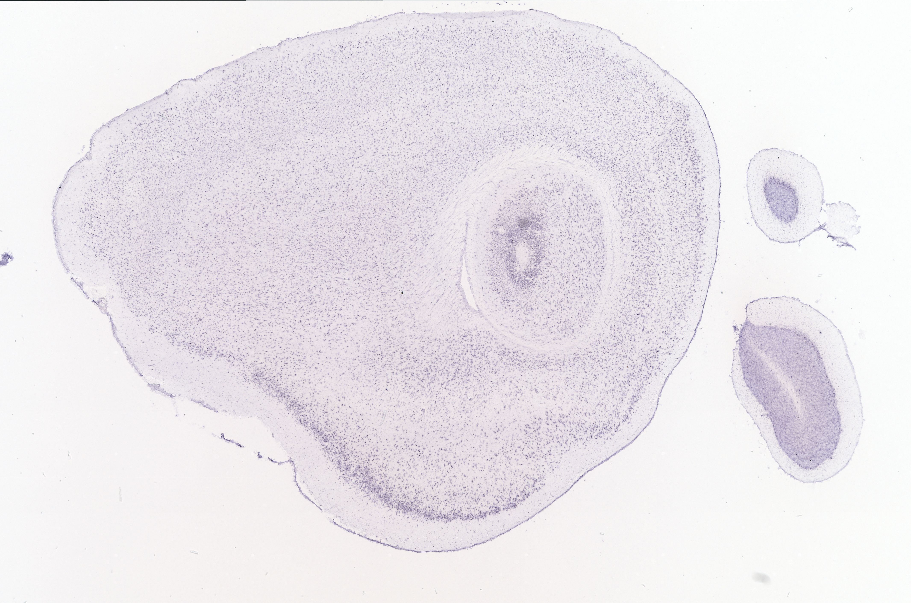
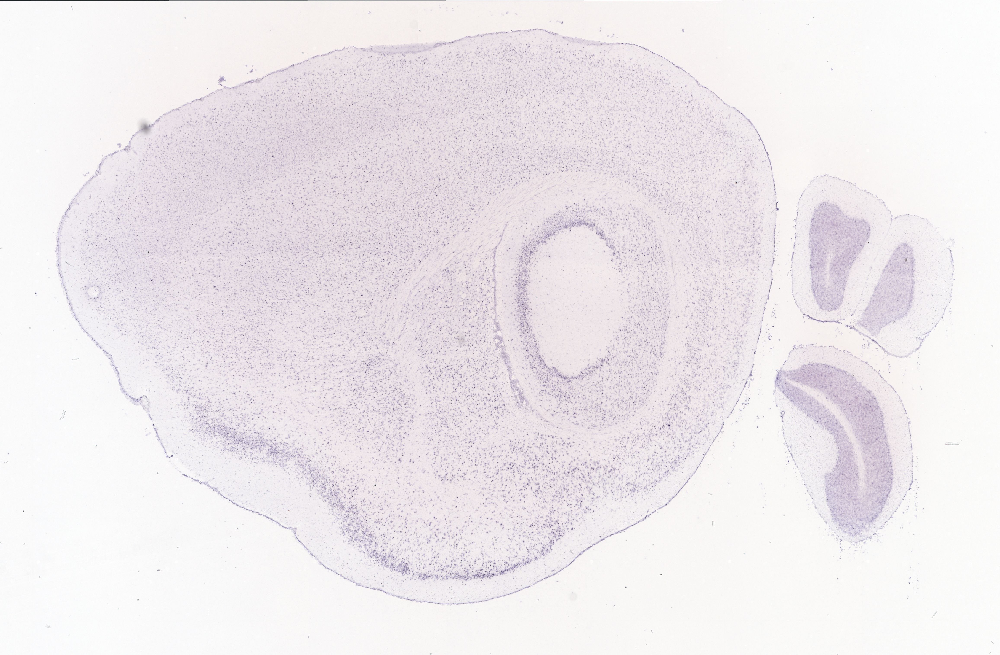
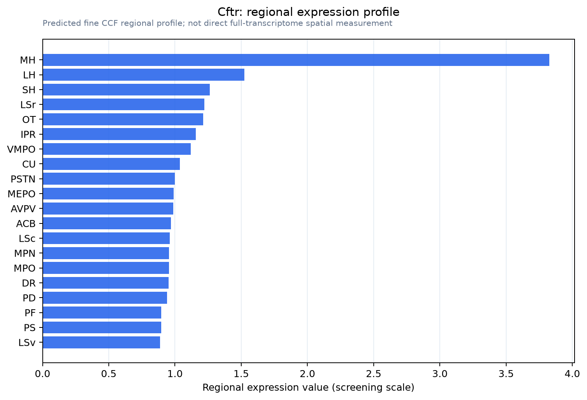

Cftr
Cystic fibrosis transmembrane conductance regulator (CFTR) (ATP-binding cassette sub-family C member 7) (Channel conductance-controlling ATPase) (EC 5.6.1.6) (cAMP-dependent chloride channel)
Spatial tier: STRICT_EXCLUSIVE · Class: ION_CHANNEL · Top region: MH (Medial habenula) · Positive regions: 5/554
Function in MH: evidence, prediction, innovation
- Gene function
- CFTR is an ATP-binding cassette protein that works as a cAMP/PKA-gated chloride and bicarbonate channel. PKA phosphorylation of its regulatory domain plus ATP binding and hydrolysis at the nucleotide-binding domains open the pore, so CFTR converts cAMP signalling directly into anion flux. Loss-of-function mutations cause cystic fibrosis through defective epithelial salt and water transport.
- Region function
- The medial habenula is an epithalamic relay whose cholinergic/substance P neurons project almost exclusively through the fasciculus retroflexus to the interpeduncular nucleus. This MHb-IPN axis sets nicotine aversion and withdrawal, fear memory expression, anxiety and negative affect.
- Published in this region
- inferred No region-specific literature found. The closest published context is that CFTR transcript and protein have been reported in mammalian brain and cystic fibrosis is accompanied by central nervous system features (Reznikov 2017, Chest), but no study has examined CFTR in habenular neurons.
- Predicted function
- Prediction: because MHb neurons maintain an unusually depolarised chloride reversal potential (the basis of their excitatory GABA-A and GABA-B responses), a cAMP-gated Cl- conductance here would be depolarising rather than inhibitory. CFTR should therefore couple Gs-linked neuromodulation to increased MHb excitability and greater transmitter release at IPN terminals. Knockout or CFTRinh-172 block is predicted to reduce tonic MHb firing and blunt nicotine-withdrawal aversion, while the potentiator ivacaftor should do the opposite.
- Innovation
- ★★★★★ 5/5 CFTR has essentially never been studied as a neuronal channel in the habenula despite excellent clinical-grade modulators being available.
- Tools
- Cftr knockout and gut-corrected Cftr mouse lines (e.g. Cftrtm1Unc, JAX 002196) and floxed Cftr alleles; blockers CFTRinh-172 and GlyH-101; potentiator ivacaftor (VX-770) and correctors VX-445/VX-661; well-validated CFTR monoclonal antibodies (clone 596, CFF Therapeutics).
- References
Direct evidence located at the region

Allen ISH experiment 69548870, section image 69524685 (section 152): the section that contains the CCF centroid of Medial habenula according to the Allen image-to-atlas alignment (reference_to_image), with a 2 mm window around that point. Left: whole section, red box = window. Middle: ISH signal. Right: Allen's expression-mask view of the same window. open this image in the Allen viewer
Direct spatial evidence



Regional expression figure

Predicted WMB × fine-CCF profile; not direct full-transcriptome spatial measurement.
Spatial profile
Evidence and specificity
- Evidence status
- PREDICTED_FINE
- Direct sources
- None; predicted localization only
- Exclusive threshold
- 12 positive regions out of 554
- Spatial specificity
- 0.321
- Top-region fraction
- 0.120
- Filter status
- PASS
Interpretation limits
- Cell-type-to-region projection is imputed expression, not direct spatial measurement.
- Adult reference atlases do not establish stability across age, sex, strain, state, or disease.
- Transcript abundance does not guarantee protein abundance or genetic-tool performance.